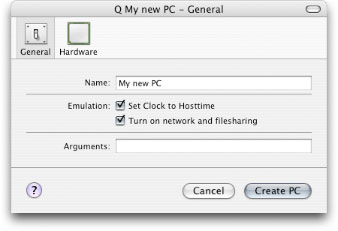
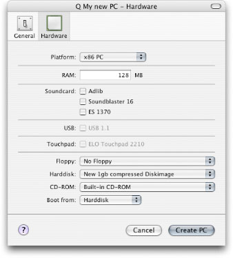
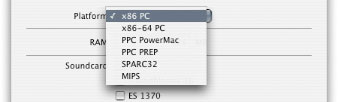
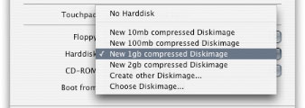
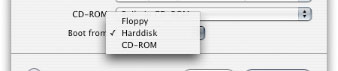

Q Help
Q Help
Create or edit a guest PC
To create a new PC select "create new PC" from the Menu "Guest PC" or the Toolbar.
To edit a PC, select the PC and select "edit PC" form the Menu "Guest PC" or the Toolbar.
General Settings

- Give Your guest PC a name
- Emulation
- Set Clock to Hosttime
- Windows: to work properly it is recommended to set this option.
- Linux: it is not recommended to set this option.
- Turn on Network and Filesharing
If this option is checked. The emulated Machine has access to your net/internet.
Q will also enable filesharing between host and guest.
If your host is not connected to the internet, Q will automatically disable this option
- Arguments
Q is built on QEMU. You can use all commandline options from QEMU.
Please consult QEMU CPU Emulator User Documentation for the complete list.
Hardware Settings

- Select the Platform
A Platform provides You a comlpete PC with Network and Graphics.
Please consult the System Specifications for details about the different platforms.

- x86 PC
Use this Platform to emulate a Maschine to run Windows/DOS/Linux. x86 is tested and stable.
- x86-64 PC
Use this Platform to emulate a Maschine to run Linux64/WindowsXP64. x86-64 is functional, but not stable.
- PPC PowerMac
Use this Platform to emulate a Maschine to run Linux/MacOS 9/Mac OS X. PPC PowerMac is for Developpers only.
- PPC PREP
Use this Platform to emulate a Maschine to run Linux/MacOS 9/Mac OS X. PPC PREP is for Developpers only.
- SPARC32
Use this Platform to emulate a Maschine to run SUN Solaris. SPARC32 is for Developpers only. You can select a Machine to emulate
- MIPS
MIPS is for Developpers only.
- Select the amount of RAM
Here are some minimal recommandations.
The emulated system runs faster, the more RAM it has.
Please consider that the host OS and the emulator also need enough RAM to run efficent.
A rule of thumb is to dedicate 1/3 of the hosts RAM to the emulator.
- DOS: 1mb
- win95/98/me: 32mb
- win2k/winXP: 128mb (256+ recommended)
- linux (console): 4mb
- linux (with X Server) 32mb
- Soundcard
Emulates different Soundcards.
It is possible to select several Cards.
Audioemulation needs about 150Mhz of your processor speed.
- Adlib for OPL2 Synthesis (good for old dos games)
- Soundblaster 16 (best choice for soundeffects and windows)
- ES1370
- Floppy Disk emulation
You can emulate a Floppy-Drive for your guest. Q uses image-files to emulate the Disks.
- No Floppy: do not emulate a Floppy
- Choose Imagefile: select a Image-file to represent the Floppy-Disk
- Harddisk Disk emulation

You can emulate a Harddisk for your guest. Q uses image-files to emulate the Disks.
The main diskimage format is qcow. This is a "growing" Disk, which starts at a few kb and grows with to guest until it reaches the specified size.
- No Harddisk: do not emulate a Harddisk
- New 10mb compressed image: creates and selects a new diskimage with the size of 10mb, using qcow.
- New 100mb compressed image: creates and selects a new diskimage with the size of 100mb, using qcow.
- New 1gb compressed image: creates and selects a new diskimage with the size of 1gb, using qcow.
- New 2gb compressed image: creates and selects a new diskimage with the size of 2gb, using qcow.
- Create other Diskimage: opens a Dialog to create a individual Diskimage.
- Choose Imagefile: select a Image-file to represent the harddisk.
The size of the Harddisk is determined by the guest OS and the Applications want to use.
Here are some recommandetions for different guest OSes (Don't forget to add Space for Your Applications):
- DOS: 1mb
- Windows95: 100mb
- Windows98/me: 250mb
- Windows2k: 1gb
- WindowsXP: 2gb
- Linux(small): 100mb
- Linux normal Distribution: 4gb
- CD-ROM emulation
You can emulate a CD-ROM-Drive or use the builtin CD-ROM drive from your host for your guest. Q uses image-files to emulate the Disks.
- No CD-ROM: do not emulate a CD-ROM.
- Built-in CD-ROM: use the CD-ROM Drive of your Mac.
- Choose Imagefile: select a Image-file to represent the CD-ROM.
- Select the boot Drive

You can boot from the Floppy, CD-Rom or the first Harddisk.
- Your Done!